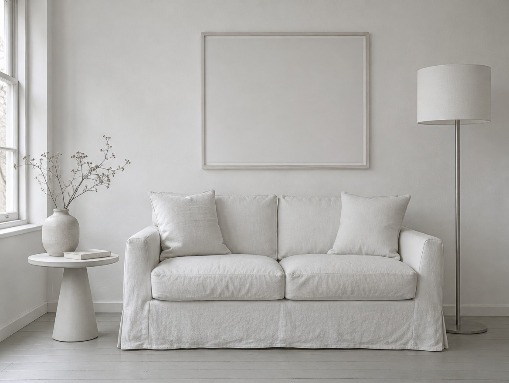
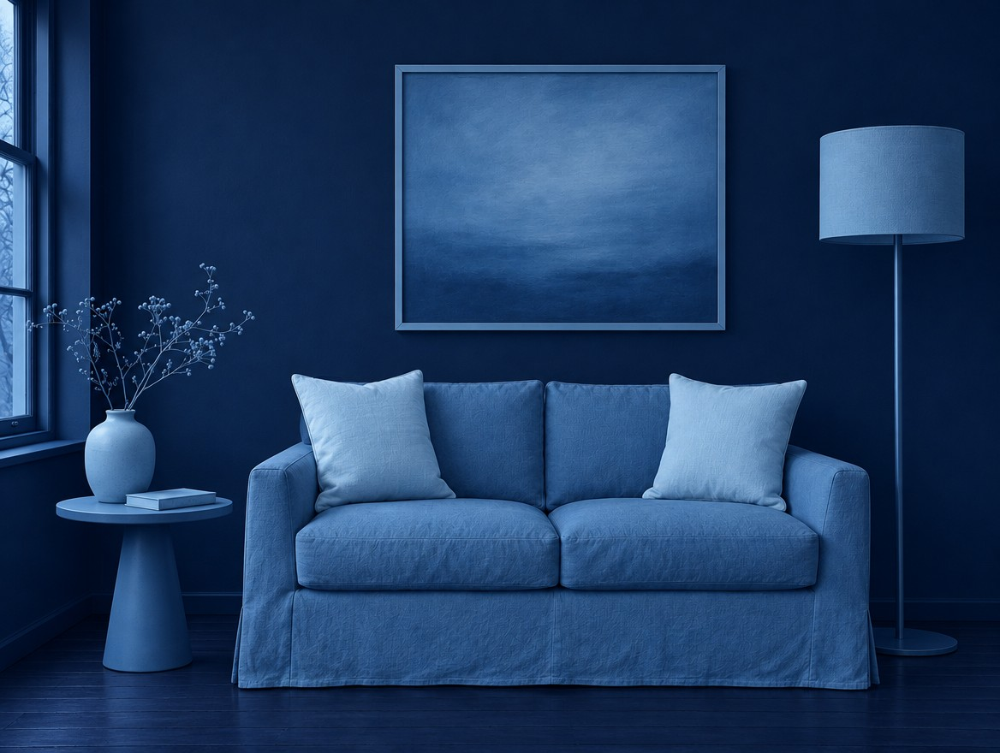
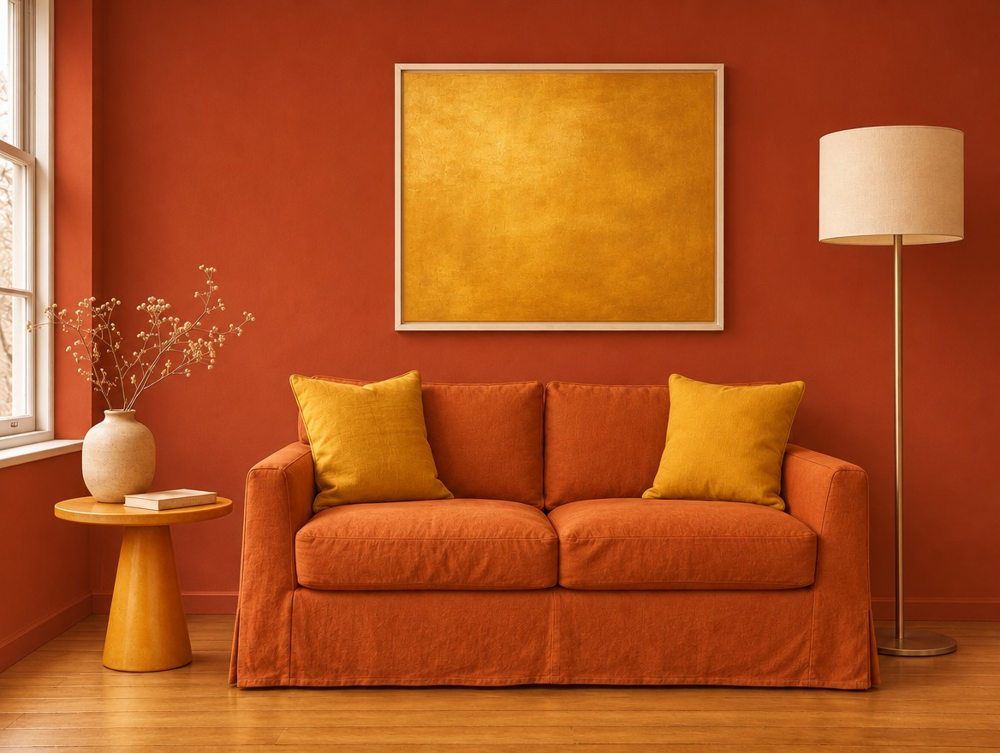
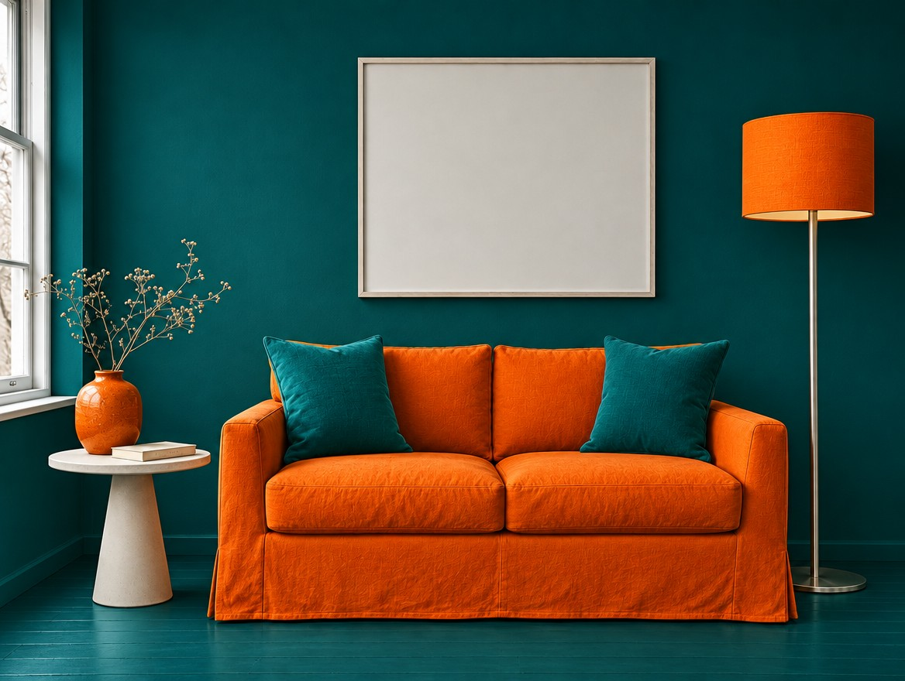
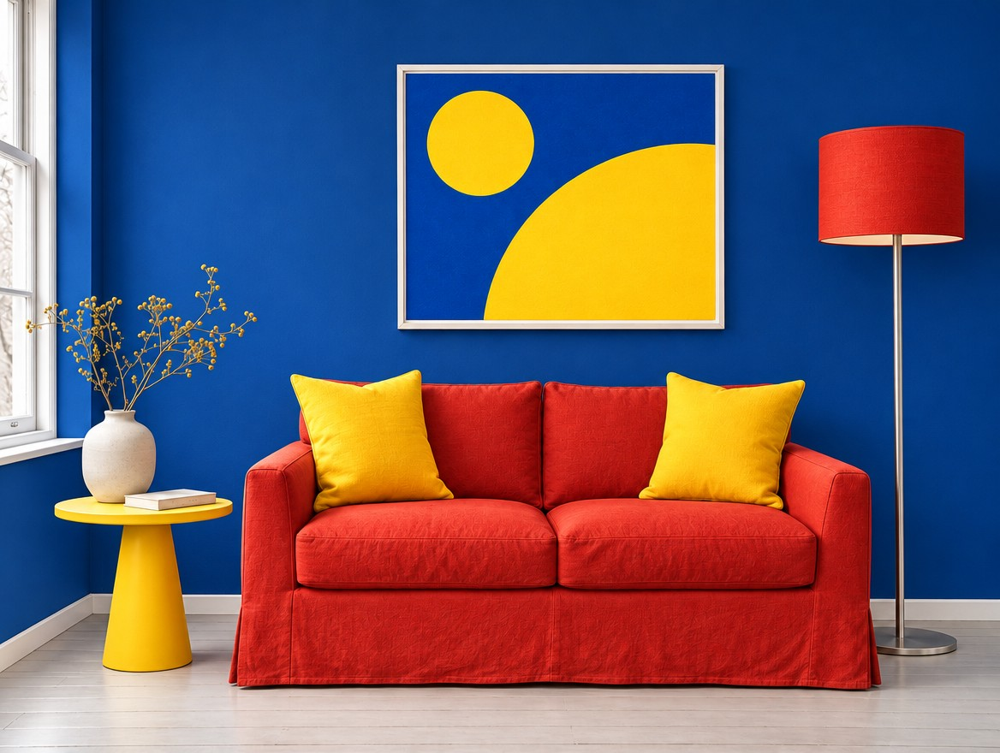
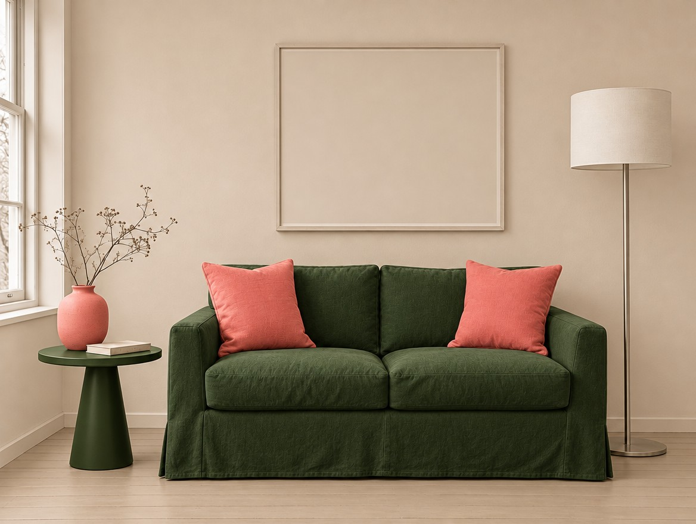

AI 문방구 · 배색 이름 5
‘색감 예쁘게’ 말고
배색 이름 5개
댓글로 신청해주셔서 고마워요. 영상 속 사진은 전부 힉스필드(GPT Image 2.6)로 같은 흰 거실 사진에 배색 이름만 바꿔 다시 만든 결과예요. 프롬프트는 버튼을 누르면 복사돼요.
HOW내 사진으로 하는 법
- 사진 한 장 올리기 이미지 AI(힉스필드 GPT Image 2.6에서 만들었어요)에 내 사진을 참고 이미지로 넣어요. 색이 적은 사진일수록 차이가 잘 보여요.
- [ ] 만 바꾸기 주인공 이름과 원하는 색만 영어로 바꿔요. 색 이름은 navy, terracotta처럼 구체적일수록 좋아요.
- 배색 이름은 대문자로 MONOCHROMATIC처럼 대문자로 적으면 AI가 규칙을 더 잘 지켜요.
BASE기준 사진 (전)

Photorealistic interior photo of a small minimalist living room corner, all white and light grey: white plaster walls, a plain white linen sofa with two cushions, a round side table with a ceramic vase and a book, a floor lamp, a framed blank artwork on the wall, pale grey wooden floor, soft daylight from a window on the left. Neutral, colorless, eye-level, straight-on framing, no people, no text, no logos.
01monochromatic
모노크로매틱 · 한 색으로만
한 가지 색을 진하게 연하게만 써요. 차분하고 정돈된 느낌이 필요할 때.
전

후The exact same [공간/사진 속 주인공], same objects, same camera angle and framing. Restyle it with a MONOCHROMATIC color scheme using only shades of [deep blue]: every object is a tint or shade of the same single hue, no other colors. Photorealistic, no text, no logos.
02analogous
아날로거스 · 이웃한 색끼리
색상환에서 옆에 붙은 색 2~3개를 묶어요. 따뜻하거나 시원한 한 가지 분위기로 모여요.
전

후The exact same [공간/사진 속 주인공], same objects, same camera angle and framing. Restyle it with an ANALOGOUS color scheme of neighboring hues: [red-orange, orange and yellow] only, no opposite colors. Photorealistic, no text, no logos.
03complementary
컴플리멘터리 · 반대색
색상환 반대편 두 색을 붙여요. 눈에 확 띄어야 하는 표지·광고에 잘 맞아요.
전

후The exact same [공간/사진 속 주인공], same objects, same camera angle and framing. Restyle it with a COMPLEMENTARY color scheme of [teal blue] and [bright orange]: strong high contrast between the two opposite colors. Photorealistic, no text, no logos.
04triadic
트라이어딕 · 세 색 같은 간격
색상환을 삼등분한 세 색을 써요. 아이·놀이·팝 분위기에 좋아요.
전

후The exact same [공간/사진 속 주인공], same objects, same camera angle and framing. Restyle it with a TRIADIC color scheme of [red, yellow and blue]: three bold evenly spaced hues. Photorealistic, no text, no logos.
0560-30-10 rule
60-30-10 · 비율로 나누기
바탕 60, 보조 30, 포인트 10. 색을 정해도 어디에 얼마나 쓸지 모를 때 이 비율만 적어요.
전

후The exact same [공간/사진 속 주인공], same objects, same camera angle and framing. Restyle it with the 60-30-10 color rule: 60 percent [warm beige] (walls and floor), 30 percent [deep forest green] (main furniture), and only 10 percent [coral pink] as a small accent. Clean, balanced. Photorealistic, no text, no logos.
TOOL색 고를 때 같이 여는 곳
Coolors · Happy Hues
Coolors(coolors.co)는 팔레트를 HEX 코드로 바로 보여주고, Happy Hues(happyhues.co)는 어느 색을 배경·제목·버튼에 쓰는지까지 보여줘요. 여기서 고른 색 이름을 [ ] 자리에 넣으면 돼요.
2026.11.24 힉스필드 GPT Image 2.6 · 4:3 · medium으로 만들었어요. 결과는 매번 조금씩 달라요.